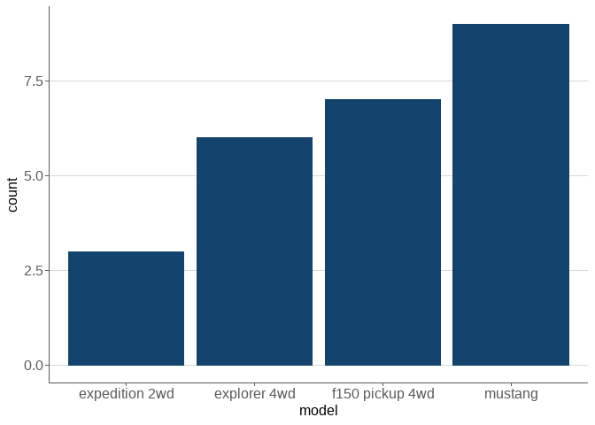

sgplot is an R package for creating accessible plots in the Scottish Government. Currently, functions are available for styling ggplot2 plots.
The package has been developed using the Government Analysis Function Data Visualisation guidance for charts and colours. sgplot should be used in conjunction with these guidance documents.
More information about the package and its functions can be found on the sgplot website.
Installation
To install sgplot, the remotes package is required. The package can then be installed directly from GitHub with:
remotes::install_github(
"DataScienceScotland/sgplot",
upgrade = "never"
)Network security settings may prevent remotes::install_github() from working. If this is the case, sgplot can be installed by downloading the zip of the repository and running the following code, replacing the section marked <> (including the arrows themselves) with the location of the downloaded zip:
remotes::install_local(
"<FILEPATH OF ZIPPED FILE>/sgplot-main.zip",
upgrade = "never"
)Getting Started
Once installed, sgplot can be loaded using the library() function:
Help files for each function in the package can be found on the References page of the package website. Alternatively, type ?function_name into the RStudio console. For example:
?theme_sg()Use sgplot as default
The easiest way to use sgplot is by adding use_sgplot() to the beginning of your R script, Rmarkdown document or Shiny app code. This function will set a number of defaults to ggplot2 geoms, use sgplot colour palettes and use theme_sg().
Example 2: Plot with one colour using sgplot defaults
sgplot::use_sgplot()
ggplot(d, aes(x = model)) +
geom_bar() +
# Make some other adjustments to improve look of plot
scale_y_continuous(expand = c(0, 0)) +
ggtitle("An example ggplot bar plot using sgplot")
Licence
Unless stated otherwise, the codebase is released under the MIT License. This covers both the codebase and any sample code in the documentation.
The documentation is © Crown copyright and available under the terms of the Open Government 3.0 licence.